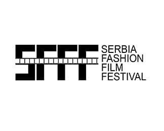
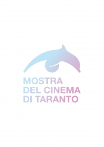
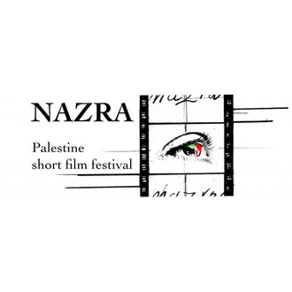
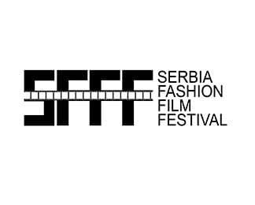
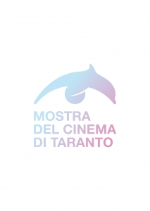
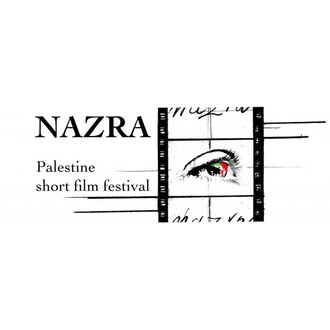

... is a photographer and filmmaker.
Originally from Prague, Anna moved to London in 2009 to complete her degree in Media and Communications at Goldsmiths University. Her projects take her across the globe, exploring the worlds of fashion, music, humanistic documentaries and humanitarianism.
Her work, in both photography and film, encompasses her powerful vision whilst consistently being able to adapt to the needs and nuance of the project.
Her personal and commissioned pieces are defined by authenticity, humour and unconventionality that go beyond the norm and produce unique, genuine and eclectic works of art.
 




